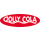

Vores Produkter
Til dem, der ikke har behov for at følge strømmen og er ligeglade med, om de skiller sig ud. Til dem, der holder med den lokale fodboldklub i medgang og modgang. Til dem, der elsker udflugter til de danske strande om sommeren. Til dem, der synes brun sovs og kartoffelchips går hånd i hånd. Til dem, der er fuldstædigt ligeglade med, hvad andre synes om dem og deres holdninger. Og sidst, men ikke mindst, til dem der sætter pris på det danske, det ægte og æren! Jolly er til alle! Dem der nyder det originale og det at være original!
Drikkevarer
Selvom vores originale smagsvariant, Jolly Cola, er den mest kendte, har vi også mange andre forfriskende drikkevarer.
Jolly Cola
Jolly Cola Sukkerfri
Jolly Appelsin Sukkerfri
Jolly Time
Jolly Abrikos
Jolly Lemon
Jolly Eksotisk
Jolly Ananas
Jolly Danskvand
Merchandice
Vis din danske stolthed frem! Vi har et større udvalg af merchandice i form af t-shirts, hoodies og glas! Vis din kærlighed til Jolly eller giv en gave der vil sprede glæde for modtageren. Nedenfor ses et mindre udvalg af vores nyeste styles!
Jolly Tee

En t-shirt så du kan vise din Jolly stolthed frem
Jolly Hoodie